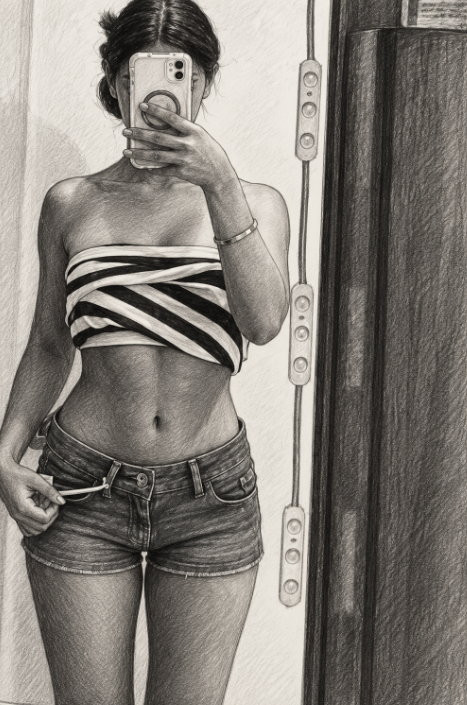

La Gazzetta
Manilla ruba
la scena
Italiana, bellissima, a piede libero. Il fidanzato si dichiara complice.

Notizia confermata: Manilla entra in scena e tutto il resto sparisce. Nessuna effrazione. Le basta essere se stessa.
Il cuore del cronista risulta disperso. «So chi l’ha preso», dichiara. «E non ne chiederò la restituzione».
La sospettata è libera. Il cronista è cotto.
Identikit
Nome: Manilla. Segno particolare: impossibile passare inosservata.Avviso ai lettori
Chi prova a restare indifferente lo fa a proprio rischio sentimentale.— Sfoglia: il caso si fa personale —
La dinamicaIl cronista apre la foto per dare un’occhiata. La richiude. La riapre. A quel punto la redazione capisce che il servizio durerà più del previsto.
La pista dello specchioLo specchio è l’unico testimone presente. Interrogato sui fatti, si limita a riflettere. Un comportamento poco collaborativo, ma impeccabile sul piano tecnico.
Il telefonoSi sospetta favoreggiamento: era lì, ha registrato tutto e non ha fatto nulla per fermarla. Si difende sostenendo di aver svolto il proprio lavoro.
Il moventeNon cercava di rubare la scena. Ed è proprio questo il dettaglio più sospetto: a Manilla viene naturale.
Il conflitto d’interessiIl direttore ammette di essere il suo fidanzato. Alla richiesta di un commento imparziale risponde: «Possiamo saltare questa domanda?».
«Mi avevano chiesto di mantenere il distacco. Ho mantenuto la foto.»— Il cronista, ormai fuori servizio
Il caso Manilla
Cinque accuse. Un solo cuore. Nessuna voglia di difendersi.
Identikit della sospettata
- Nome
- Manilla
- Nazionalità
- Italiana
- Segni particolari
- Una bellezza che lascia il segno
- Stato
- A piede libero, nei miei pensieri
- Complice
- Il fidanzato. Confesso e contento.
Le accuse della redazione
- I — Furto di cuore.Il mio. Preso senza preavviso, custodito benissimo.
- II — Rapina all’attenzione.Il mondo parla. Io continuo a pensare a lei.
- III — Oltraggio alla concentrazione.Stavo facendo qualcosa. Non ricordo più cosa.
- IV — Eccesso di fascino.Nessun limite rispettato. Nessun reclamo presentato.
- V — Recidiva sentimentale.Mi fa innamorare di nuovo. E poi di nuovo.
Anche lo specchio
è complice
«La difesa chiede una pausa: anche l’avvocato ha perso il filo.»— Udienza sospesa per eccesso di fascino
Manilla, devo confessare una cosa: tutta questa inchiesta era una scusa per dedicarti la prima pagina.
Potrei chiamarti «ricercata», riempire colonne di accuse e dare la colpa allo specchio. Ma la verità è molto più semplice: sono felice che tu sia la mia ragazza.
Sei bellissima, sì. Però quello che mi piace di più è che sei tu. E nessun titolo, per quanto grande, riesce a dire tutto quello che questo significa per me.
Mi piacciono i momenti in cui non succede niente di straordinario, eppure esserci insieme rende tutto diverso. Le cose piccole che non finiscono sui giornali, ma che io voglio tenere strette.
La vera notizia è questa: ti sceglierei anche senza titoli, senza prove e senza prima pagina.
— Il tuo fidanzato, complice per scelta
La sentenza: baci a tempo indeterminato, abbracci senza limite e un fidanzato che non smette di sceglierti.
Anzi, facciamo due.
Una storia inventata. Un affetto vero.
Fine dell’edizione. Inizio del prossimo abbraccio.